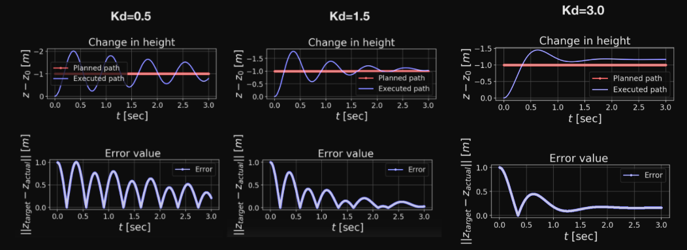

While the p term is responsible for adjusting the thrust so that the vehicle's position matches the target position, the d term is responsible for adjusting the thrust, so that the vehicle's velocity matches the target velocity.
So, when the vehicle is rapidly ascending towards the target, the D term will oppose the rapid decrease in the size of the position error, and will cause the vehicle to slow down as it's approaching the target altitude.
Effects of different D gains

With low values of $K_d$, it takes longer to "settle" the oscillations. $K_p$ is kept constant. If $K_d$ is too high, then the control gives an excessive response, more abrupt corrections that risk overshooting the reference trajectory (see $K_d=3.0$).